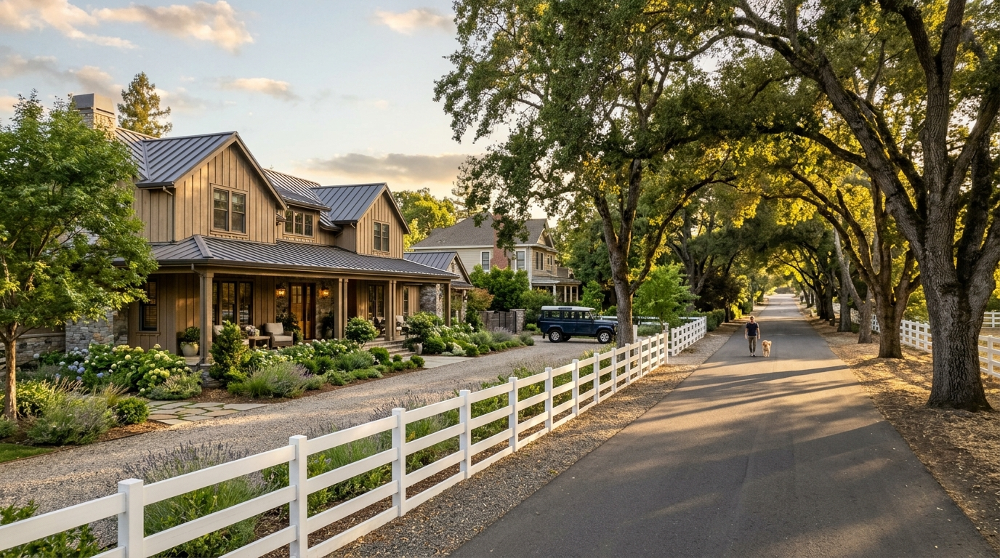

EXPLORE THE NEIGHBORHOODS


Find your corner of Alamo
GOLF CLUB LIVING · GATED
Round Hill Country Club →
Premier championship golf course living, custom hill estates, tennis, aquatics, and panoramic valley ridge vistas.
ESTATE ACREAGE · PRIVACY
Alamo Oaks & South Alamo →
Flat multi-acre parcels with majestic mature oaks, heritage equestrian properties, private gates, and gated security.

TRAIL ACCESS · RIDGE VIEWS
Westside Alamo →
Direct Iron Horse Regional Trail access, walkable country lanes, custom contemporary estates, and proximity to downtown Danville.
PANORAMIC DIABLO · LUXURY
Diablo View & Las Trampas Foothills →
Perched on the western ridges of Las Trampas Regional Wilderness, delivering sunset views and unmatched natural serenity.